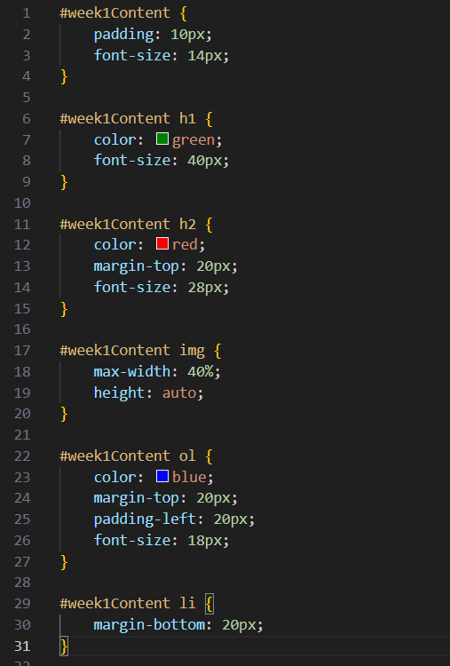

Week 1 Dev Blog
Intro to HTML

- I created my first webpage
- I learned how to use elements such as <p>, <h1>, <em>, and lists using <ul> or <ol>
- I learned how to upload images using links and locally
Week 2 Dev Blog
Intro to CSS

- I learned some HTML semantic elements like <header>, <nav>, <article>, and <section> so that the HTML code is not messy.
- I learned that CSS is for sizing,colour and positioning of the texts or images in html
- I learned how to link CSS file with html
Week 3 Dev Blog
More about CSS

- I learned different types of selector such as class selector that can be reused and stacked
- I learned about different ways of positioning such as relative,absolute,relative absolute and fixed positioning that help to tidy the webpage.
- I learned the pros and cons of low fidelity and high fidelity wireframes.